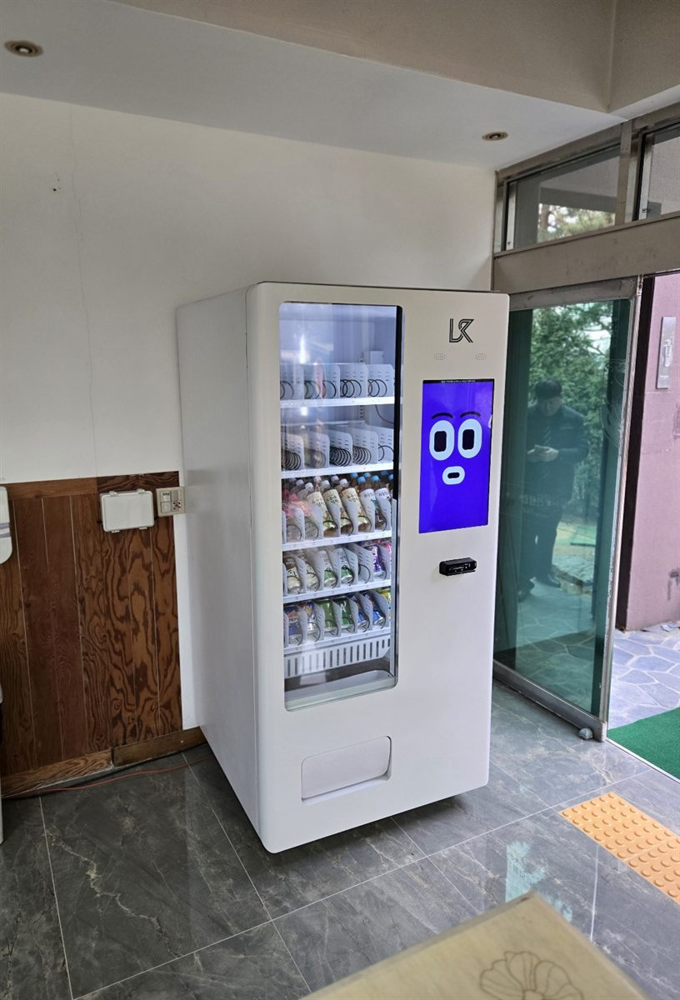

오피스텔 입주민은 대부분 혼자 살고, 늦게 들어옵니다. 퇴근길에 물 한 병 사는 걸 깜빡하면 다시 옷을 입고 편의점까지 나가야 하는데, 그게 귀찮아서 그냥 넘기는 경우가 많습니다. 1층 로비에 자판기가 있으면 엘리베이터를 타기 전에 생수와 음료를 챙길 수 있습니다. 택배를 찾으러 내려온 김에 하나씩 뽑아 가는 사람도 생깁니다.
이번 자리는 유리 출입문을 들어서자마자 보이는 벽면이었습니다. 오피스텔 로비에서 먼저 보는 건 출입문이 열리는 반경, 바닥 점자블록, 가까운 전용 콘센트 세 가지입니다. 문이 열리는 쪽을 비켜 기계를 벽에 붙이고, 점자블록과 떨어진 자리로 옮겨 통로 폭을 남겼습니다. 바닥이 석재라 수평 받침을 한 번 더 맞춥니다.
부천 오피스텔 로비에 맞는 구성
1인 가구가 많은 건물은 생수·탄산음료·에너지음료 칸을 넉넉하게 둡니다. 저녁 늦게 한꺼번에 두세 병씩 사 가는 경우가 있어 인기 품목은 두 칸 이상 잡고, 아침 출근 시간에는 캔커피와 두유가 나갑니다. 컵라면처럼 뜨거운 물이 필요한 품목은 로비 자판기와 맞지 않아 뺍니다.
결제는 신용·체크카드와 삼성페이·카카오페이·네이버페이를 받습니다. 현금을 거의 들고 다니지 않는 연령대라 카드와 간편결제만으로도 충분합니다. 칸별 재고와 매출은 휴대폰 앱으로 확인하니, 관리실이나 운영자가 비는 칸만 골라 채우면 됩니다.
오피스텔에 놓을 때 좋은 점과 어려운 점
좋은 점은 매일 같은 사람들이 드나드는 공간이라는 것입니다. 입주민 수가 정해져 있어 어느 품목이 얼마나 나가는지 몇 주만 보면 흐름이 잡히고, 건물 안이라 날씨와 도난 걱정이 적습니다. 주말에도 입주민은 그대로라 요일에 따른 공백이 크지 않습니다.
어려운 점도 있습니다. 건물 1층이나 바로 옆에 편의점이 있으면 매출이 그쪽으로 나뉩니다. 입주 세대가 적은 건물은 회전이 느려 유통기한 관리에 신경을 써야 합니다. 그리고 로비는 공용 공간이라 관리단이나 관리사무소 동의가 먼저 필요하고, 전기요금을 누가 낼지도 미리 정해 두는 편이 좋습니다.
부천 무인매장, 이런 자리가 잘 됩니다
부천은 면적에 비해 사람이 촘촘하게 사는 도시라 건물 안 자리가 잘 나옵니다. 중동과 상동 일대는 7호선 신중동역·부천시청역·상동역을 따라 오피스텔과 업무 건물이 늘어서 있어 로비나 휴게 공간 자리가 많고, 1호선 부천역·송내역 주변은 원룸과 상가 건물이 몰려 있어 스터디카페·코인노래연습장 같은 늦게까지 여는 업종 문의가 들어옵니다.
역곡동에는 가톨릭대학교 성심교정이, 심곡동에는 부천대학교가 있어 학교 앞 원룸촌 수요가 꾸준합니다. 오정동·삼정동·내동 쪽은 공장과 물류 창고가 섞여 있어 휴게실 자판기가 맞고, 춘의동 부천종합운동장 주변은 체육 시설 로비 자리를 볼 만합니다. 범박동·괴안동처럼 아파트 단지가 새로 들어선 곳은 단지 상가 한쪽 무인매장 구성이 어울립니다.
부천 서비스 지역
원미구 · 소사구 · 오정구 — 중동 · 상동 · 심곡동 · 원미동 · 춘의동 · 도당동 · 약대동 · 송내동 · 소사동 · 역곡동 · 범박동 · 괴안동 · 오정동 · 고강동 · 성곡동 · 작동 · 여월동 · 내동 · 대장동 · 삼정동
역세권 — 부천역 · 송내역 · 중동역 · 역곡역 · 소사역 · 신중동역 · 부천시청역 · 상동역 · 춘의역
인접한 인천 부평 · 인천 계양 · 시흥 · 광명 · 김포와 서울 구로 · 강서 · 양천까지 같은 조건으로 나갑니다.
부천 무인창업, 이렇게 시작하시면 됩니다
설치비는 받지 않습니다. 자리 확인부터 품목 구성, 기계 반입, 카드 결제 연동, 재고 채우는 방법까지 한 번에 안내해 드립니다. 오피스텔은 이사 차량과 택배 차량이 몰리는 시간대를 피해 반입 시간을 잡고, 관리사무소에 엘리베이터 보호재 사용을 미리 알려 둡니다.
비용은 구입이 렌탈보다 유리한 편입니다. 렌탈료를 몇 년 내는 것보다 처음에 사 두는 쪽이 총액이 낮게 나오는 경우가 많습니다. 구성별 36개월 총비용은 구입 vs 렌탈 비교 가이드에 정리해 두었습니다.
부천 무인자판기 설치 상담
로비나 공용 공간 사진 한 장만 보내 주셔도 됩니다. 출입문 위치와 콘센트, 통로 폭을 보고 어떤 크기가 맞을지 먼저 봐 드린 뒤 견적을 보내 드립니다.
※ 사진은 픽포스가 시공한 설치 사례이며, 글에 적힌 지역의 현장 사진은 아닙니다. 자판기 구성과 품목은 자리와 업종에 따라 달라지며, 공동주택·오피스텔 공용 공간은 관리단 동의와 전기 사용 조건을 현장에서 먼저 확인합니다. 정확한 금액은 견적서로 안내드립니다.